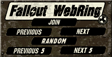

"Life in the vault... is about to change...."
If you've played Wasteland, then you may know that it foretells of a sequel. You'll find this information on the computer screen of Faran Brygo. But where is this sequel? At one time, fans thought this sequel was going to be Interplay/EA's title Meantime, which never made it to the light of day, and wasn't going to be an official sequel anyway! We never got our official sequel, but we got something pretty darn close: the Fallout series of games.
1997: 10 years after the release of Wasteland, Black Isle Studios, the RPG division of Interplay Productions, released a post-nuclear role playing game set 80 years after a global nuclear war. Sound familiar? This game is Fallout, and has been heralded as the unofficial sequel to Wasteland. In fact, the inside flap of the Fallout game box (see right) begins with "Remember Wasteland?" (Technically, since Electronic Arts owned part of the Wasteland copyright, Interplay couldn't make it an official sequel.) In this game, instead of controlling a group of Desert Rangers and recruits, you play the role of a vault-dweller who ventures above ground for the first time since the nuclear bombs fell.
Fall, 1998: Interplay released Fallout 2, also created by Black Isle Studios. This game picks up one generation after FO--in fact you play a descendant of the vault dweller from the original Fallout game.
March, 1999: Interplay released their Adventure Hall of Fame, a bundle of six titles including Fallout.
March, 2001: Microforte' and 14° East, in partnership with Interplay, released Fallout Tactics: Brotherhood of Steel. It is a strategy game that takes place between Fallout 1 and 2. You play a new recruit in the Brotherhood of Steel. Before Fallout Tactics hit the shelves, I asked readers to offer me the scoop about Fallout Tactics. Eventually I received an excellent review by Vault Dweller T. Richards. A few months later, I received another great review by Brotherhood of Steel recruit J. Edgell.
2002: Interplay releases Fallout Radioactive, a bundle of Fallout, Fallout 2 and Fallout Tactics, with a pen and paper RPG game.
January, 2004: Interplay releases Fallout: Brotherhood of Steel, a console (XBOX, PS2) game that had questionable placement in the Fallout universe.
October, 2008: Bethesda Game Studios, who had acquired the rights to Fallout from Interplay, releases Fallout 3. To quote my older brother, "Best. Game. EVAR!"
October, 2010: Bethesda Game Studios releases Fallout: New Vegas. Set back in Wasteland's old stomping ground, the PS3/XBOX/Windows game based on the same game engine as Fallout 3.
2009-present: Bethesda releases several DLCs for FO3 and FO:NV.
Editor's note: my involvement in the Fallout series has been relatively minor. I bought Fallout brand-spankin' new, but have only also played Fallout 3. But still, send me your tips, your End Statuses, and Wasteland comparisons for collection on this site. I am happy to host them.
Here are some tributes to Wasteland contained in the Fallout games.
| Wasteland | Fallout |
|---|---|
| Fix the water pump in Highpool. (One of the earliest, easiest quests to solve.) | The first quest you are sent to solve is finding a water purification chip for Vault 13. |
| The Red Ryder (a "Super Juvie") in Highpool appears and attacks you if you kill the Juvies who laugh at you when you fall in Highpool Lake. The Red Ryder is very easy to kill. AND, if you use the "Super Loot Bag" you can actually get the Red Ryder gun. (See the Wasteland Underground.) | You can find the Red Ryder BB Gun and the Red Ryder LE BB Gun, which do a whopping 25 points damage and have an accuracy of 95% at range. Perhaps these kick butt guns are to make up for the fact that the WL RR was a wimp. To find them, wander from hex to hex along the coast. You should come across "Bob's Used Cars" or something similar. Behind Bob (he's a raving lunatic, BTW) in his shack, there's a footlocker on the left back wall (with a Red Ryder BB gun), and on the right back wall, amidst all the junk, the Red Ryder LE BB gun. Worth it! |
| Most likely the second place you'll visit in Wasteland is the Agricultural Center, a farming community having trouble with rad rats. | Most likely the second place you'll visit in Fallout is Shady Sands, a farming community having trouble with rad scorpions. |
| The Mines. Creepy. Exploring it throughout gets you some experience and some silver, but some gas masks. (Whoop Whoop) | Vault 15. Creepy. Exploring it gets you some experience and a piece of armor. (Whoop Whoop) |
| The Wasteland Paragraph Book has two different-ending story lines of paragraphs detailing the Rangers' journey to Mars to fight the Serpioid Invaders. | If you have the Explorer perk, you can find a crashed UFO with alien corpses (who carry a picture of Elvis and a POWERFUL Ray Gun)? The UFO is near the blast crater in the south. Muck about a bit for it, it's there, complete with the notice "Return to Area 51 if found." The cash is also near (or along) the coast. |
| Charmaine and the Servants of the Mushroom Cloud | Morpheus Children of the Apocalypse |
| Casino war between Fat Freddy and Faran Brygo in Vegas. Fat Freddy, the "bad guy," wants you to kill Faran Brygo, the "good guy." | In Junktown, there is a man named Tycho in the Skum Pitt bar who will introduce himself to you and suggest that he help you clean up the town of all the scum in it. If you talk to him enough, he mentions that he is a Desert Ranger! And eventually, assuming you ask the right things, he mentions that the situation between Killian and Gizmo reminds him a lot of another casino war involving a really fat owner in Las Vegas that his grandfather used to tell him about. Gizmo, the "bad guy," wants you to kill Killian, the "good guy." |
| Sleeper Base / Darwin Station / Base Cochise | The Glow/Military Base: certain similarities: you got to repair stuff and you got to find the correct secpasses. And there is large storage of weapons and armor similar to the sleeper base (although easier to reach). |
| The old man in Scott's Bar in Quartz asks you for the answer a riddle, which you can find by looking at the table tops or talking to Laurie, the waitress: URABUTLN or URAQTU. | The woman saying "CDEDBD Ducks" in the Boneyard. |
| Armor: Leather Jacket, Power Armor. | Armor: Leather Jacket, Power Armor. |
| Hobo Dogs | Iguana on a stick (of course, these are made of people! People!) |
| The Citadelian clergy, guardians of technology (you can find one of two proton axes here). | Brotherhood of Steel: reminiscent of the Guardians of the Old Order Their philosophy seems similar. |
| Main storyline: replacing humans with robots. | Main storyline: replacing humans with mutants. |
| The broken-down car north of Quartz, that only Ace, master mechanic, could fix. | In Necropolis, you spot several rusted out hulk of a car. Right-clicking upon it to examine it resulted in the following message: "If the Mechanic of the Year appeared next to you right now, he and you both couldn't fix this hunk of junk." |
| Pit Boss in Wasteland. | Decker in Hideout below the Maltese Falcon |
| Rail Nomads. | Raiders. |
| Max | Harold (remember, in Fallout, robots = mutants) |
| Wasteland death screen shows a skull and bones and the message: "Your life has ended in the Wasteland." | Fallout death screen shows a picked-clean corpse and an eerie voice says some kind of death comment, one of which is, "Your life ends in the Wasteland." |
| In Wasteland, you can go to Scott's Bar in Quartz, where the local toughs listen to Ratt, a popular rock band from the early '80s, on the jukebox. | In Fallout, you can go to the Skum Pitt in Junktown, where the local toughs hang out, and a singer belts out modified lyrics to the song Head Like a Hole by Nine Inch Nails, a popular rock band from the early '90s. |
| Angela Deth, of course, is the name of one of the prerolled characters that was coded into every game of Wasteland. | In one of Fallout's random encounters, according to one ranger who reported having seen it in a strategy guide, you can encounter Angela Deth. He thinks one has to play a character with very high luck and outdoorsman skills. Perhaps there was another requirement, he had long since forgotten. Can anyone provide a verification of this? |
| Wasteland | Fallout 2 |
| At the east end of Quartz, there is a graveyard with many tombstones
of a humorous nature. One of the particularly clever ones is:
Lester Moore, |
At the east end of the Den, there is a graveyard with
a tombstone that reads:
Here lies the body of Jonathan Blake |
| In the Quartz Courthouse, you encounter Hewey, Dewey and Louie, and most likely get into a battle not beneficial for the three brothers. On each of their wrists is a bracelet with a two-digit number engraved on it. These three numbers spell out the combination to a safe you encounter later in the game. | In a raider base in Fallout 2 you find three dog tags with a two-digit number on each of them. There is also a safe in the base that can be opened by using the numbers as the combination. |
| In Wasteland, there is a place where you can use an old howitzer to blow away some buildings in Needles. | The howitzer at the Sierra Army Base. |
| In the Sleeper Base, a high-tech pre-nuclear-holocaust installation, there is a hole in the wall in one room out of which you can pull some power packs. | In the vault in Vault City, a high-tech city built on top of a pre-nuclear-holocaust installation (ie the vault), there is a rattling vent out of which you can pull some micro fusion cells. |
| In the Wasteland paragraphs, there's one moment when they mention a "helijetthopter" that either crashes or lands. [Actually, it's an Ornijetcopter, and it is shot down by the Serpioid fighters. --Ranger Ben] | The ornithopter? (Archive of old Interplay forums page). |
| Wasteland | Fallout Tactics: Brotherhood of Steel |
| Main threats are robots. | Main threats are robots. |
| Characters can repair robot with broken toster parts. | Characters can find fake robot parts, which turn out to be broken toasters. |
| Quartz | While not actually appearing in Fallout Tactics, someone at Duck and Cover, an old and now defunct Fallout website, had a map created by JJ86 based on Quartz. Description: "This mission was heavily influenced by the town of Quartz in the old PC game Wasteland. It should play similarly with most of the same NPCs and PCs. The town layout is also similar so you will recognize most everything. I added a few things to round out the plot as a stand alone mission." You can access the map zip here: Fallout Tactics Quartz Map. I haven't played FO:T so I don't know how you'd use this zip but there it is for what it is worth. (Archive of Duck and Cover site) |
){kind=link}
{kind=link}
Here is one tribute to Fountain of Dreams contained in Fallout. Surely there are more? Then again, it's probably coincidence that this one's in there at all!
| Fountain of Dreams | Fallout |
|---|---|
| In the DeSoto's houses, one room is lined with paintings, one of which is a Velvet Elvis. | Apparently a Velvet Elvis portrait can be found in the crashed UFO encounter, on the alien skeleton that had the blaster. |
Fortunately for the post-apocalyptic masses, all of the Fallout games are still available for purchase, either new or used:
Fallout: A Post Nuclear Adventure
- Amazon.com Marketplace [Windows 95 / 98 / Me].
- Bundled with Fallout 2 -- Amazon.com Marketplace [Windows 95 / 98 / NT / Me].
- Included in Interplay 15th Anniversary Anthology [Windows 95 / 98 / Me].
- Buy Fallout and Fallout 2 Bundle from Amazon.com [Windows 95 / 98 / NT / Me].
- Amazon.com [Windows 95 / 98 / NT / 2000 / Me].
- Amazon.com [Mac OS].
- Amazon.com [Windows 95 / 98 / Me].
Thanks to all the vault dwellers who've reported in to the HQ-Grid regarding various information used on this page, and other sources of information used to create this page:
- Ausir
- J. Bell
- R. Clayton
- Daimon2
- N. Dolezal
- Fat Boy
- E. Needhammer
- Parkan197
- Quarex
- T. Richards
- Satanic Stan the Garbage Man
- T. Takalo
- J. Tilmann
- V
- M. Volk
- N. K. Jim
- Moby Games
- Wasteland
- Meantime
- Fountain of Dreams
- ⇒ Fallout

This webpage complies with the W3C XHTML standards.
This site is part of the Fallout WebRing.
The official navigation bar looks cool (click image for full size)...

...but the map-code was bad HTML. So, I scrapped
it in favor of these simple links:
[ Prev |
Next |
List Sites ]
){kind=link}